- 发帖数量：17 帖（共 33 张图，1 个附件 PDF）
- 时间范围（美西时间 PDT）：2026-10-11 11:58 至 18:38
- 来源：知识星球「南半球聊财经」星主 Jason不跪；本文把每帖转写成可读文字，并逐帖解读、逐图说明。
今日要点速览
今天的主线是"全球财政与利率的紧绷"：一边是欧洲债市抛售、富国利息支出超 3.3 万亿美元、八大经济体仍在押注加息；另一边是中国在汇率、财政、消费三条线上都"动作有限"。 高盛说央行在压着人民币升值速度、野村说 5500 亿新增地方债只能部分抵消财政收缩、巴克莱说中国奢侈品复苏遥遥无期，三家外资给了一致的"内需偏弱"画像。欧中之间的插混汽车配额（第一年 35 万辆）和德银"十问十答"则显示贸易再平衡正在从口水战进入具体条款。结尾 Jason 自己写了一个"纳税人与管理者"的小故事，配上霍耐特与弗雷泽的《再分配还是承认？》，把一整天的财政话题落到了"钱怎么收、怎么花、谁来监督"这个最根本的问题上。
帖 1 · 高盛：人民币升值与"两个失衡"
时间：2026-10-11 11:58（美西）｜标签：#金融#
帖子原文
高盛： 中国巨额贸易顺差，既来自内需偏弱，也来自汇率偏低。我们认为中国面对的是两个失衡：内部失衡 = 内需不足、外部失衡 = 贸易顺差过大，对应需要两个工具：扩大内需+人民币升值，我们并不完全认同央行"汇率不是问题"这套说法。人民币升值确实单独解决不了问题，但仍然是再平衡工具的一部分。人民币今年的升值来源于经常账户流入远大于资本市场流出。结汇比例，2026年8月已经升到63%，而正常年份大概只有45%，我们看到从2025年12月开始，人民币中间价里的逆周期因子一直偏正，意味着央行在做的其实是：压低人民币升值速度。也就是如果完全顺着市场走，人民币可能升得更快。央行这次公开强调"人民币不存在人为压低"，很大程度上就是回应欧洲正在形成的"人民币低估→中国贸易顺差过大"叙事。第二个目的，是对内管理预期。
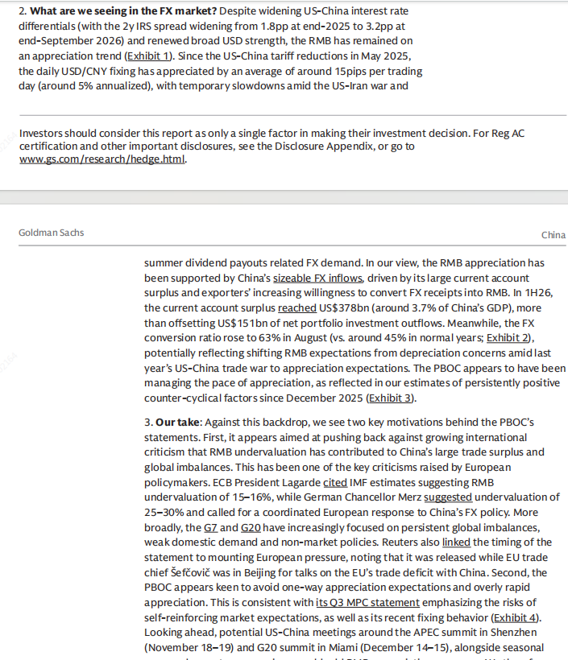
一句话核心
高盛认为：人民币今年其实在升值，而且央行在"踩刹车"而不是"踩油门"；央行公开否认压低汇率，主要是为了回应欧洲的指责并管理国内预期。
背景与关键数据
- 两个失衡：内部失衡指国内消费和投资不够，东西生产出来国内消化不了；外部失衡指出口远大于进口，贸易顺差过大。两者是一体两面：国内买不动，产能只能往外卖。
- 再平衡工具：扩大内需（让国内多买）和人民币升值（让出口变贵、进口变便宜）。央行的立场是"汇率不是问题"，高盛不完全同意，认为汇率至少是工具之一。
- 经常账户 vs 资本账户：经常账户主要记录贸易和投资收益的钱，资本账户记录买卖股票、债券等金融资产的钱。图中数据：2026 年上半年经常账户顺差 3780 亿美元（约 GDP 的 3.7%），远超 1510 亿美元的证券投资净流出。贸易赚的美元比资本外流的多，人民币自然有升值压力。
- 结汇比例 63% vs 45%：结汇比例指出口商把赚到的外币换成人民币的比例。正常年份约 45%，2026 年 8 月升到 63%，说明企业从"囤美元等贬值"转为"赶紧换人民币等升值"，预期已经反转。
- 逆周期因子：人民币每天的中间价由"前一日收盘价 + 一篮子货币变动 + 逆周期因子"算出。逆周期因子是央行的调节项，"偏正"意味着中间价被定得比市场推算的更弱（更多人民币兑一美元），也就是在压住升值速度。
- 图中补充：中美 2 年期利率互换利差从 2025 年底的 1.8 个百分点扩大到 2026 年 9 月底的 3.2 个百分点（美国利率更高，按理说该支撑美元），但人民币仍在升值；自 2025 年 5 月中美降关税后，USD/CNY 中间价平均每天升 15 个基点（年化约 5%）。欧洲方面，拉加德引用 IMF 估算说人民币低估 15–16%，德国总理默茨说低估 25–30%。
图片解读
截图是高盛报告的两页正文。第一段讲外汇市场的观察：尽管中美利差扩大、美元走强，人民币仍在升值。第二段讲升值的资金来源（经常账户顺差、结汇比例上升）和央行的态度（逆周期因子持续偏正）。第三段"Our take"给出两个动机：一是回应欧洲"人民币低估导致顺差过大"的批评（路透社注意到央行声明发布时欧盟贸易专员谢夫乔维奇正在北京谈贸易逆差），二是避免单边升值预期和过快升值。最后提到 11 月 18–19 日深圳 APEC 和 12 月 14–15 日迈阿密 G20 期间可能有中美会晤。
为什么重要 / 对市场和经济的含义
- 如果央行是在"压着升"，那人民币的方向是升值，只是速度被控制。对持有人民币资产的外资是利好，对出口企业的利润是压力。
- 欧洲的叙事正在从"中国产能过剩"升级为"中国操纵汇率"，这会成为后续贸易谈判（见帖 5、帖 7）的筹码。
- Jason 把这帖放在第一条，配合后面野村和巴克莱的内容，传达的观点是：外资一致认为中国问题的根子在内需，汇率和财政都只是外围工具。
延伸知识
- 三元悖论：一个国家不能同时拥有固定汇率、资本自由流动和独立货币政策，只能三选二。中国选的是"管理汇率 + 部分资本管制 + 独立货币政策"，逆周期因子就是"管理汇率"的具体手段。
- 1985 年广场协议：美国当年也用"你的货币被低估"这套叙事逼日元升值，之后日元两年内升值近一倍。今天欧洲对中国的说法在历史上有先例，但中国的资本管制让外部压力的传导方式完全不同。
帖 2 · 野村：5500 亿新增地方债只能部分抵消财政收缩
时间：2026-10-11 12:03（美西）｜标签：#TAX#
帖子原文
野村： 财政部允许地方政府动用此前已获批但尚未使用的地方债额度，新增可用规模约5500亿元，这里和2024、2025年最大的区别在于：过去额外释放的地方债额度，很大一部分被拿去化解隐性债务，并没有直接转化为新增需求；而今年这5500亿元，野村认为会全部用于增量支出，因此短期乘数效应会比前两年稍强。2024年额外4000亿元里，只有约1000亿元用于新增支出；2025年额外5000亿元里，只有约2000亿元用于新增支出，剩下3000亿元都主要用于化债。所以这次政策从"支出属性"看，确实更积极。但拉长看，这5500亿元最多只是抵消过去半年财政收缩的一部分。原因是，今年预算内财政支出其实明显偏慢。4—8月预算内财政支出同比增速只有 0.2%，也就是说，财政收入在回升，但支出没有跟上，形成了实际上的财政收缩。我们估计2026年土地出让收入会比2025年少大约1.2万亿元，+5500亿新增地方债还是偏少。
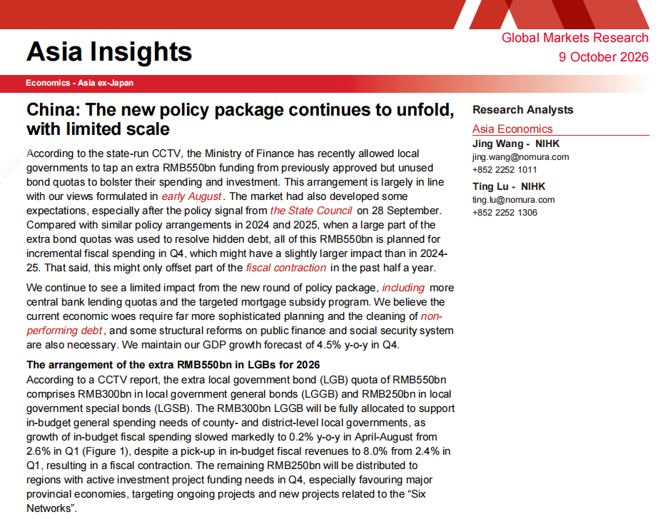
一句话核心
这 5500 亿地方债比前两年"更像真花钱"，但对冲不了财政支出放缓和土地收入减少 1.2 万亿的缺口。
背景与关键数据
- 地方债额度：地方政府发债要有中央批的额度。以前批了但没用的额度，现在允许动用，相当于"把抽屉里的信用卡额度拿出来刷"。
- 化解隐性债务（化债）：地方政府通过融资平台借的、不在账面上的债。用新发的地方债去置换这些旧债，钱是借新还旧，不产生新需求，所以"乘数效应"（1 块钱财政支出能带动多少 GDP）很低。
- 三年对比：2024 年额外 4000 亿里仅 1000 亿是新增支出；2025 年额外 5000 亿里仅 2000 亿新增；2026 年 5500 亿全部新增。从"真花钱"比例看，确实逐年提高。
- 财政收缩的证据：图中野村数据，一季度预算内财政支出同比 2.6%，4–8 月只有 0.2%；同期收入增速从 2.4% 升到 8.0%。收入在涨、支出不涨，等于财政在从经济里净抽水。
- 土地出让收入：地方政府过去最大的"预算外"收入来源。野村估计 2026 年比 2025 年少 1.2 万亿，5500 亿只够补一半不到。
- 5500 亿的拆分（图中）：3000 亿一般债（LGGB），全部用于县区级一般性支出；2500 亿专项债（LGSB），给有在建项目的主要省份，重点投"六网"相关项目。野村维持四季度 GDP 增速 4.5% 的预测。
图片解读
野村 2026 年 10 月 9 日《Asia Insights》报告首页，标题"中国：新政策包继续展开，但规模有限"，作者王静、陆挺。正文说这个安排符合他们 8 月初的判断，市场在 9 月 28 日国务院释放信号后已有预期；同时指出央行再贷款额度和定向房贷补贴等措施影响也有限，当前经济问题需要更精细的规划、不良债务清理和公共财政、社保体系的结构改革。
为什么重要 / 对市场和经济的含义
- 市场常把"地方债额度"当刺激，但野村的拆解说明：要看钱是去化债还是去花，去年 60% 都去了化债。
- 财政收入涨、支出不涨，叫"顺周期财政"，在经济偏弱时会放大下行。这是看懂中国今年内需偏弱的关键数据之一。
- 对资产的含义：基建相关的周期品（水泥、钢铁）不要对这 5500 亿抱太大期待；真正的转折要看预算内支出增速能否回到正常水平。
延伸知识
- 财政乘数：政府花 1 块钱，最终带动 GDP 增加多少。基建投资的乘数通常在 1 以上，债务置换接近 0，直接发钱给居民看储蓄倾向。野村"乘数效应稍强"就是说今年的钱更可能形成实际需求。
- "广义财政"：中国财政有四本账（一般公共预算、政府性基金、国有资本经营、社保基金）。土地出让收入在第二本账，所以只看一般公共预算会低估财政收缩的程度。
帖 3 · 巴克莱：中国奢侈品市场的复苏一再推迟
时间：2026-10-11 12:55（美西）｜标签：#经济数据#
帖子原文
巴克莱： 中国奢侈品市场整体重回增长，正变得越来越遥远。Q3趋势比Q2更差，黄金周初步消费数据偏弱，而且最近针对海外财富和出境旅行的政策，又给富裕消费者带来了额外的不确定性。巴克莱预计，覆盖的中国消费者群体在Q3同比大约-7%，而Q2还是+1.5%，不同品牌之间表现差异很大，从中双位数负增长到低个位数正增长都有。比如Burberry：约 +2%、LVMH：约 -10%；从黄金周观察，中国消费者仍然更愿意把钱花在旅游和体验上，而不是商品型可选消费。目前预计Q4中国奢侈品消费-1%且有下行风险。我们注意到离岸信托相关税收和海外财富监管加强，对富人群体产生了心理影响，可选消费下降。胡润估算，中国高净值群体有200万户，平均大约15%资产放在海外。其中61%集中在香港，13%在新加坡。出境限制也导致一些海外奢侈品消费降低。我们预计中国GDP大概在4%，同时中国居民债务占可支配收入的比例需要很多年才能恢复正常。就业尤其是年轻人就业仍然是问题。这意味着奢消很难回到当初。
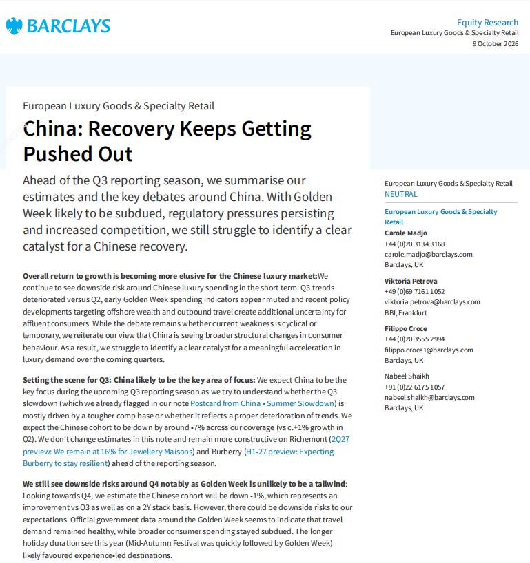
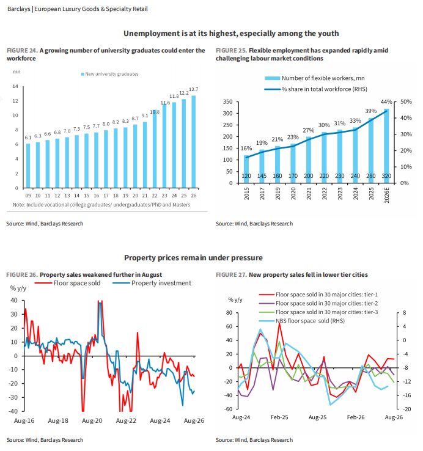
一句话核心
中国富人的奢侈品消费在三季度转为 -7%，原因不只是周期，还有海外财富监管和出境限制带来的心理压力，巴克莱认为这是结构性变化。
背景与关键数据
- "中国消费者群体"：巴克莱统计的是中国人在全球的奢侈品消费（含境外购买），不只是中国境内销售。Q2 +1.5% 变成 Q3 -7%，一个季度掉了 8.5 个百分点。
- 品牌分化：Burberry 约 +2%，LVMH 约 -10%。巴克莱对历峰（Richemont，卡地亚母公司）和 Burberry 相对乐观。
- 离岸信托税收 / 海外财富监管：2026 年以来针对高净值人群海外资产的税务和申报要求趋严。胡润估计 200 万户高净值家庭平均 15% 资产在海外，其中 61% 在香港、13% 在新加坡。监管收紧让这群人"花钱更低调"。
- 居民债务 / 可支配收入：衡量家庭杠杆的指标。巴克莱说要"很多年"才能恢复正常，意味着居民要先还债再消费。
- 结构性 vs 周期性：周期性的意思是经济好了就会回来；结构性的意思是消费行为本身变了。巴克莱明确站在"结构性"一边。
图片解读
- 图 1：巴克莱 2026 年 10 月 9 日欧洲奢侈品与专业零售行业报告首页，标题《中国：复苏一再被推迟》。核心句："我们仍然难以找到中国复苏的明确催化剂"。Q4 预计 -1%，官方数据显示黄金周旅游需求健康但整体消费平淡，中秋紧接国庆的长假更利好"体验型"目的地。
- 图 2：四张宏观背景图。
- 图 24：高校毕业生人数从 2009 年 610 万一路升到 2026 年 1270 万，每年都在创新高，就业压力的来源。
- 图 25：灵活就业人数从 2015 年 1.2 亿升到 2026E 3.2 亿，占劳动力比例从 16% 升到 44%。接近一半的劳动力没有稳定雇佣关系，收入预期自然保守。
- 图 26：商品房销售面积（红）和房地产投资（蓝）同比，2016–2026。2026 年 8 月销售面积约 -10% 到 -15%，投资约 -25% 到 -30%，两条线都没有转正迹象。
- 图 27：30 大中城市分线销售面积同比。一线（红）2026 年中一度反弹到 +20% 以上后回落到个位数；二三线在 0 附近或负值；统计局全国口径（浅蓝，右轴）约 -12% 到 -14%。只有一线城市有点起色。
为什么重要 / 对市场和经济的含义
- 奢侈品是"信心的温度计"：富人最先感知政策和监管变化。他们缩手，说明的不是没钱，而是不敢花、不想露。
- 对欧洲奢侈品股（LVMH、Kering、Richemont）是持续压力；对海南免税、港股零售也不利。
- 和帖 1、帖 2 连起来看：外资三家的共同判断是中国内需在走弱，而且不是短期能修复的。
延伸知识
- 财富效应：资产（房子、股票）涨，人觉得自己更有钱就多花；跌了反过来。中国家庭 60–70% 财富在房产，图 26、27 的房价下跌就是负财富效应的来源。
- K 型复苏：疫情后全球常见的现象，高收入群体消费先恢复、低收入群体滞后。中国的情况是连 K 的上半截也开始往下弯，这是巴克莱担心的地方。
帖 4 · "跌了都是问题，涨了都是水平"
时间：2026-10-11 12:58（美西）｜标签：#股市#
帖子原文
跌了都是问题，涨了都是水平
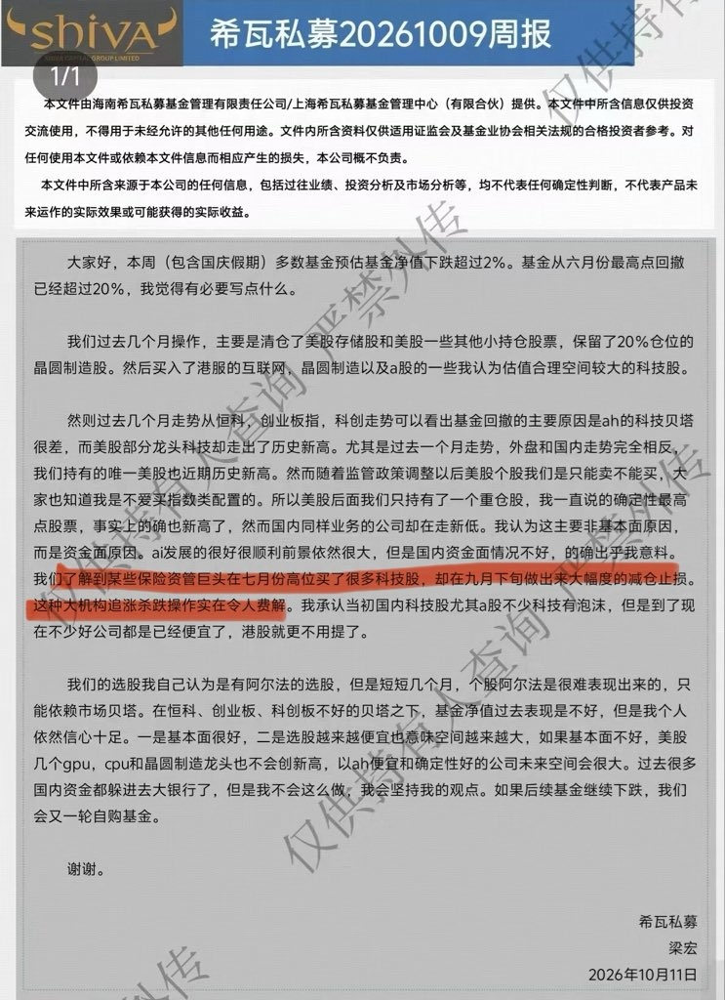
一句话核心
Jason 转发希瓦私募梁宏的周报，用一句话讽刺基金经理"赚钱归功于自己、亏钱归咎于市场"的归因习惯。
背景与关键数据
- 希瓦私募：梁宏管理的知名私募，以重仓科技股和港股互联网著称。周报日期 2026 年 10 月 9 日，署名 10 月 11 日。
- 周报要点（从图中转写）：
- 本周（含国庆假期）多数基金净值下跌超 2%，从 6 月高点回撤已超过 20%。
- 过去几个月清仓了美股存储股和其他小仓位美股，保留 20% 仓位的晶圆制造；买入港股互联网、晶圆制造和 A 股部分估值合理的科技股。
- 回撤原因：A/H 科技股贝塔（跟随市场的部分）很差，而美股龙头科技创历史新高。"监管政策调整以后美股个股我们是只能卖不能买"，所以只剩一个美股重仓，这只股票新高了，但国内同业务的公司走新低。
- 被红框标出的句子："我们了解到某些保险资金巨头在七月高位买了很多科技股，却在九月下旬做出来大幅度的减仓止损。这种大机构追涨杀跌操作实在令人费解。"
- 承认 A 股科技当初有泡沫，但现在不少公司已经便宜，港股更便宜；短期阿尔法难以体现，只能靠市场贝塔；如果净值继续跌会再自购。
- 贝塔与阿尔法：贝塔是跟着大盘涨跌的部分，阿尔法是基金经理选股带来的超额部分。梁宏的意思是：我的阿尔法没问题，是贝塔害了我。
图片解读
希瓦私募 20261009 周报的全文截图，带"仅供持有人查询、严禁外传"的水印。重点是红框部分，把回撤归因于保险资金的追涨杀跌。Jason 没有评论周报内容本身，只配了一句话。
为什么重要 / 对市场和经济的含义
- Jason 的讽刺指向一种普遍现象：业绩好时讲"选股能力"，业绩差时讲"资金面""贝塔""机构乱操作"。读者该学会分辨归因是否对称。
- 周报里有两条有信息量的东西：一是"美股个股只能卖不能买"的监管变化（QDII 类产品的美股敞口受限），二是险资在 9 月下旬大幅减仓科技股。后者如果属实，解释了 9 月底 A 股科技的急跌，也意味着这部分抛压可能已经释放。
- 与前三帖的宏观背景呼应：外资看空内需，国内资金自己也在互相踩踏。
延伸知识
- 归因偏差（self-serving bias）：心理学里把成功归于自己、失败归于外部的倾向。看基金报告时的一个实用检验：这位经理在赚钱的季度，有没有也说"主要是贝塔"？
- 险资的考核周期：保险资金通常按年考核、按季看回撤，所以在高位买入后一旦回撤超过容忍度就会机械止损，这是"追涨杀跌"的制度性原因，不一定是人蠢。
帖 5 · 德银：欧中贸易关系的"十问十答"
时间：2026-10-11 13:08（美西）｜标签：#政策分析#
帖子原文
德银： 《欧中贸易关系进入关键时刻：十问十答》
- 欧洲担心中国进口，到底是中国的问题，还是欧洲自己的问题？ 德银回答：**两者都是。**如果欧洲自身竞争力更强，中国带来的压力仍会存在，但冲击会集中在少数战略行业，而不是蔓延到大部分制造业。中国竞争力上升+欧洲自身竞争力下降，两件事叠加，才造成现在的压力。
- 欧洲面临什么宏观权衡？ 短期看，便宜的中国进口其实对欧洲消费者是好事。但长期看，如果进口长期挤压欧洲战略产业利润，产业链萎缩，工业生态弱化。
- 欧洲最脆弱的行业在哪里？ 机械、运输设备、汽车、电气机械、绿色科技、一部分工业中间品，这些行业面临中国竞争的中期压力最大。部分化工、医药、精密仪器、一些专业化工业细分领域仍保持领先。
- 德国是不是明显转鹰了？ 是，但不是全面对抗。德国企业把它成为健身房，意思是中国的竞争反而逼着德国企业提升自己。
- 近期欧中谈判能谈出什么？ 欧盟目前特别盯着**中国插电式混合动力汽车。**可能的方案包括：自愿出口限制、最低价格承诺、其他数量或价格方面的安排，如果这里能谈出一个行业协议，未来可能成为其他行业的模板。后面行业一个一个谈。
- 欧盟下一步最可能干什么？ 对中国插混汽车启动反补贴调查。最快可能10月启动，临时反补贴税最快要到2027年初。
- 欧洲最想补的其实是"反击速度"，欧洲的制度工具太慢。所以法国和德国提出一个新工具，希望24小时内就能对贸易冲突升级作出反应。
- 德银认为什么情况下贸易防御是合理的？ 因为欧洲仍然高度依赖中国关键原材料。所以它的偏好是精准、按规则、定向打击，而不是大面积封锁
- 欧洲真正该做什么？ 最重要的不是关税，而是恢复欧洲自己的竞争力。贸易防御工具只能提供暂时喘息，长期结果取决于欧洲自己的生产率和创新能力。
- 德银理想中的欧中关系是什么？ 去风险，不脱钩。五年后的理想状态是：继续贸易、继续投资、降低战略依赖、提高互惠、改善欧洲企业市场准入、战略行业有定向保护、非战略领域保持开放。
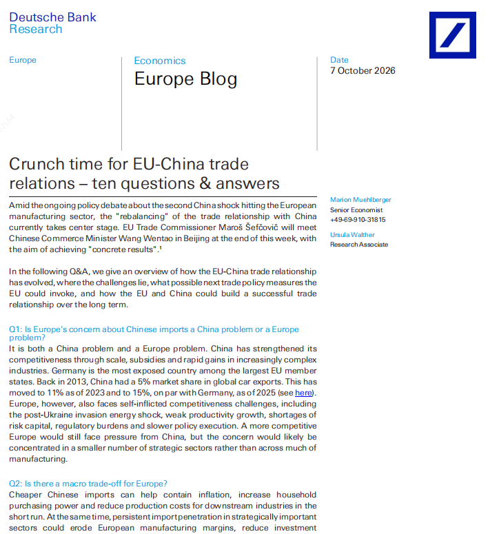
一句话核心
德银用十个问答把"第二次中国冲击"拆开：欧洲的问题一半是中国太强、一半是自己太弱，解法是精准防御加恢复竞争力，而不是全面关税。
背景与关键数据
- 第二次中国冲击（second China shock）：第一次是 2001 年中国入世后廉价消费品冲击欧美低端制造业；第二次是 2020 年代中国在汽车、机械、绿色科技等中高端领域的出口激增。图中数据：中国在全球汽车出口的份额从 2013 年 5% 升到 2023 年 11%、2025 年 15%，与德国持平。
- 自愿出口限制（VER）与最低价格承诺：都是"不加关税但控制数量或价格"的办法。1980 年代日本对美汽车出口就用过 VER。帖 7 里的 35 万辆配额就是这个思路落地。
- 反补贴调查与临时税：欧盟对中国纯电动车已在 2024 年加征反补贴税；现在轮到插混。流程上最快 10 月立案、2027 年初临时税，这个时间差正是谈判窗口。
- "健身房"说法：德国企业界的自我安慰，意思是中国竞争逼着自己锻炼。
- 关键原材料依赖：稀土、永磁体、电池材料等，欧洲高度依赖中国供应，这是欧洲不敢全面封锁的根本原因（帖 7 的联合声明里专门有稀土快速通道条款）。
图片解读
德银研究 2026 年 10 月 7 日"Europe Blog"首页，作者 Marion Muehlberger。开头说欧盟贸易专员谢夫乔维奇本周末将在北京会见商务部长王文涛，目标是"具体成果"。Q1 的回答补充了欧洲自身的问题：乌克兰战争后的能源冲击、生产率疲弱、风险资本短缺、监管负担、政策执行慢。Q2 指出便宜的中国进口短期帮欧洲抑制通胀、提高购买力、降低下游成本，但长期侵蚀战略行业利润和投资。
为什么重要 / 对市场和经济的含义
- 这是理解帖 7（35 万辆配额）的前置逻辑：欧盟选插混作为突破口，谈成了就复制到其他行业。
- "精准打击而非全面封锁"意味着中欧不会走向中美那样的全面关税战，但特定行业（汽车、机械、风电、光伏）会一个个被谈判。
- 对投资者：欧洲工业股的中期压力来自中国竞争，这不是周期问题；中国车企的欧洲增长会被配额封顶。
延伸知识
- 去风险（de-risking）vs 脱钩（decoupling）：脱钩是切断关系，去风险是降低依赖但保持往来。欧盟 2023 年起正式采用"去风险"一词，与美国的强硬路线区分开。
- 比较优势理论的现实边界：李嘉图说各国专注自己擅长的就好，但他没考虑"战略行业"一旦丢掉就很难回来。德银 Q2 讲的"产业链萎缩、工业生态弱化"正是这个边界。
帖 6 · 兴业："大家给 REITs 走个面儿"
时间：2026-10-11 13:10（美西）｜标签：#股市#
帖子原文
兴业： 大家给REITS走个面儿
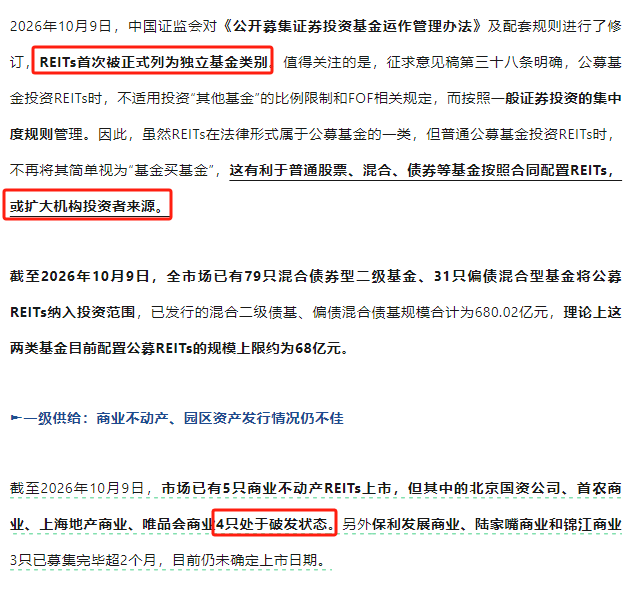
一句话核心
证监会把 REITs 列为独立基金类别、允许普通公募配置，理论上能带来 68 亿增量资金，但商业地产 REITs 五只上市四只破发，一级市场仍然冷清。
背景与关键数据
- REITs（不动产投资信托基金）：把收租的资产（产业园、高速公路、商场、仓储）打包上市，投资者买份额收分红。中国公募 REITs 2021 年起步。
- 制度变化（图中）：2026 年 10 月 9 日证监会修订《公开募集证券投资基金运作管理办法》，REITs 首次正式列为独立基金类别。征求意见稿第 38 条：公募基金投资 REITs 时，不适用"其他基金"的比例限制和 FOF（基金中的基金）规则，按一般证券投资的集中度规则管理。以前公募买 REITs 算"基金买基金"，受限很多；现在股票型、混合型、债券型基金都可以按合同配置。
- 增量资金测算：截至 2026 年 10 月 9 日，79 只混合债券型二级基金和 31 只偏债混合型基金已把公募 REITs 纳入投资范围，合计规模 680.02 亿元，理论配置上限约 68 亿元（按 10% 比例）。
- 一级供给：已上市 5 只商业不动产 REITs，其中北京国资公司、首农商业、上海地产商业、唯品会商业 4 只处于破发状态（交易价低于发行价）；保利发展商业、陆家嘴商业、锦江商业 3 只募集完成超 2 个月仍未确定上市日期。
图片解读
兴业证券研报的文字截图，红框标出三处：REITs 首次被列为独立基金类别；有利于普通股票、混合、债券基金按合同配置 REITs，扩大机构投资者来源；4 只处于破发状态。
为什么重要 / 对市场和经济的含义
- Jason 的"走个面儿"是反讽：监管在给 REITs 开渠道、找买家，但市场用脚投票，商业地产 REITs 破发率 80%。
- 68 亿的理论增量对比 REITs 市场约两千亿的总规模，杯水车薪。
- 深层信号：商业地产的租金和估值仍在下行（呼应帖 3 的地产图），REITs 的底层资产质量才是问题，不是买家不够。
延伸知识
- 破发：上市后价格跌破发行价。对 REITs 来说意味着市场认为发行时的资产估值偏高，或者对未来租金增长不看好。
- 美国 REITs 的参照：美国 REITs 市值超 1 万亿美元，核心是税收优惠（分红 90% 以上免企业所得税）和成熟的资产定价。中国 REITs 还处在"政策推着走"的阶段，这也是为什么监管要不断"开口子"。
帖 7 · 彭博：欧盟将限制中国混动车进口，第一年 35 万辆
时间：2026-10-11 13:35（美西）｜标签：#政策分析#
帖子原文
bloomberg： 我们看到的文件是第一年限制进口35万辆
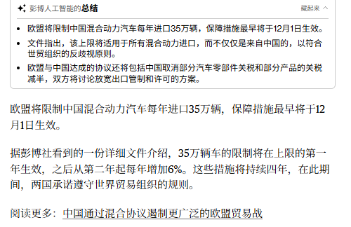
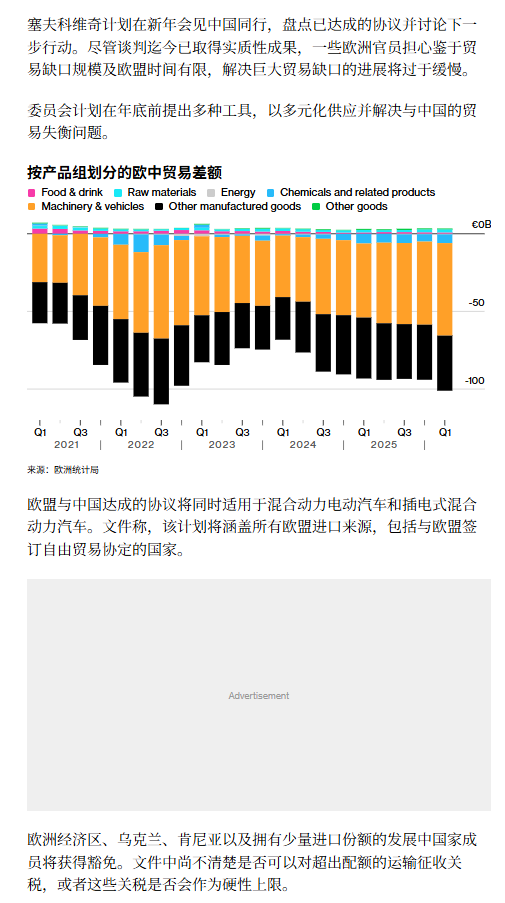
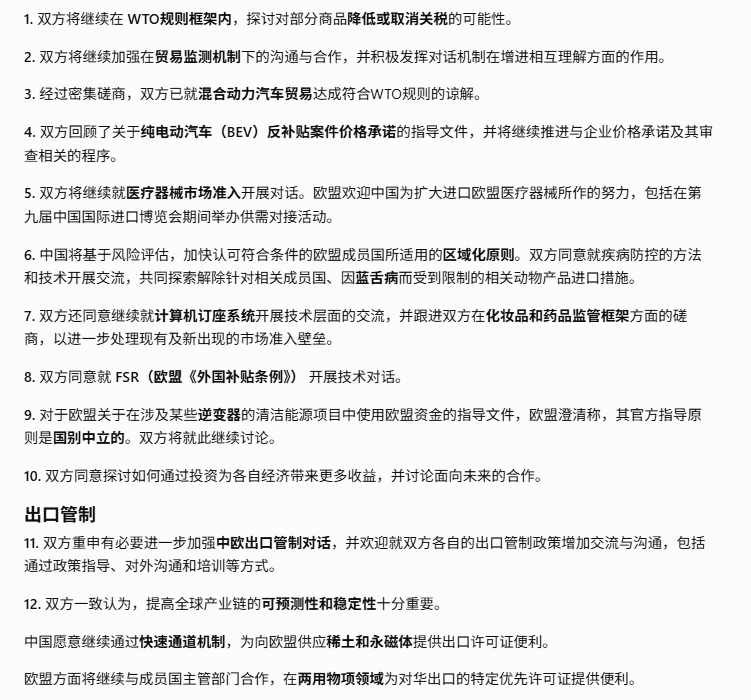
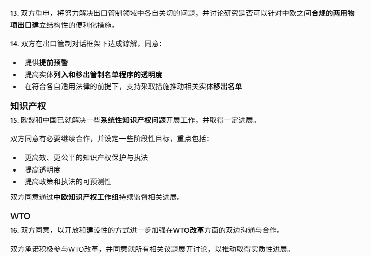
一句话核心
中欧达成协议：欧盟对中国混合动力汽车设年度进口上限，第一年 35 万辆、之后每年增加 6%、持续四年；同时发布了一份 16 条的联合声明，涵盖关税、出口管制、稀土、知识产权和 WTO 改革。
背景与关键数据
- 保障措施（safeguard）：WTO 规则允许在进口激增损害本国产业时临时限制进口，必须对所有来源一视同仁。所以文件写的是"适用于所有混动车进口，而不仅仅是中国"，这是为了符合 WTO。
- 配额细节：第一年 35 万辆，第二年起每年增加 6%，持续四年，最早 12 月 1 日生效。覆盖混动和插混。欧洲经济区、乌克兰、肯尼亚和进口份额很小的发展中国家豁免。超出配额是否征税、税率多少，文件尚不清楚。
- 交换条件：欧盟取消部分汽车零部件关税和部分产品的关税减半，双方讨论放宽出口管制和许可。
- 联合声明 16 条要点（图 3、图 4）：
- WTO 框架内探讨部分商品降低或取消关税。
- 混动汽车贸易达成符合 WTO 规则的谅解。
- 回顾纯电动车反补贴案的价格承诺指导文件。
- 医疗器械市场准入对话。
- 就欧盟《外国补贴条例》（FSR）开展技术对话。
- 逆变器清洁能源项目的欧盟资金使用，欧盟澄清原则是国别中立。 11–14. 出口管制对话；中国通过快速通道机制为欧盟供应稀土和永磁体提供许可便利；欧盟在两用物项领域提供优先许可；研究对合规两用物项建立结构性便利；提前预警、提高实体列入和移出管制名单的透明度。
- 知识产权：更高效公平的保护与执法、提高透明度和可预测性。
- WTO 改革的双边沟通。
- 图 2 数据：欧盟对中国贸易逆差按产品分，2021–2026 年一季度，每季度约 500–1000 亿欧元。机械与车辆（橙）和其他制成品（黑）是逆差的绝对主体，2022 年三季度峰值约 1000 亿欧元，2026 年一季度回到约 1000 亿欧元。
图片解读
- 图 1：彭博 AI 摘要和正文。三个要点：年进口上限 35 万辆、12 月 1 日生效；适用于所有混动进口以符合 WTO；欧盟取消部分零部件关税、部分产品关税减半。
- 图 2：文字说谢夫乔维奇计划新年再见中方，欧盟官员担心贸易逆差规模和时间有限，年底前委员会将提出多种工具。中间是欧中贸易差额堆叠柱状图（来源欧盟统计局），各季度都是负值（欧盟逆差），橙色机械车辆和黑色其他制成品占了绝大部分，食品、原材料、能源、化工只是薄薄一层。
- 图 3、图 4：中欧联合声明的中文版条款 1–16，分为关税与贸易、出口管制、知识产权、WTO 四块。
为什么重要 / 对市场和经济的含义
- 这是德银帖 5 里"行业协议模板"的第一个实例。配额制比关税温和，中国车企可以通过在欧洲建厂绕开，但出口增速被明确封顶（35 万辆对比 2025 年中国对欧混动出口规模，约束是实质性的）。
- 稀土快速通道是中方的筹码，用来换取欧盟在两用物项上的便利。这说明中国的稀土出口管制已经成为谈判中最有效的工具。
- 对比中美：中欧走的是"边打边谈、逐行业协议"，比中美的全面关税战温和得多。对比亚迪、吉利、零跑等有欧洲业务的车企，配额是短期利空、本地化建厂是长期必答题。
延伸知识
- 关税配额（TRQ）：配额内低税或零税，超出部分高税。文件里"是否对超出配额的运输征收关税、关税是否作为硬性上限"还没确定，说明制度设计还在最后阶段。
- 1981 年日美汽车自愿出口限制：日本同意每年对美出口不超过 168 万辆，结果日本车企把利润转向高端车型并在美国建厂，反而加速了丰田、本田的美国本土化。中国车企在欧洲可能复制这条路。
帖 8 · 彭博：俄乌战争伤亡、能源停火与欧洲债市警报
时间：2026-10-11 13:46（美西）｜标签：#其他国家经济#
帖子原文
bloomberg： 上个月俄罗斯在乌克兰的伤亡超过5万人，死亡人数多达2.8万。特朗普周日表示俄罗斯和乌克兰已同意立即生效的"能源停火"。泽连斯基表示，如果普京也支持停火，他也支持。德国一位顶级央行行长表示，欧洲最近的债券抛售是一个"明确的警示信号"，欧洲债务危机风险急剧上升。
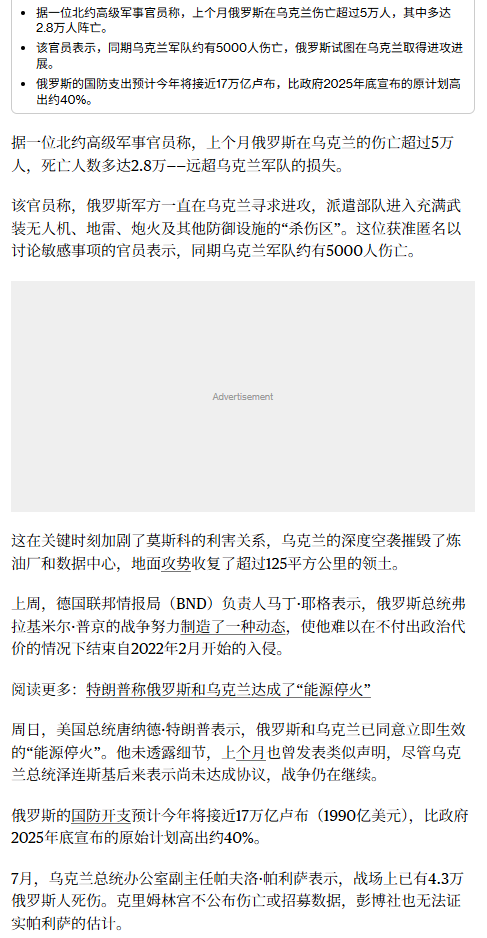
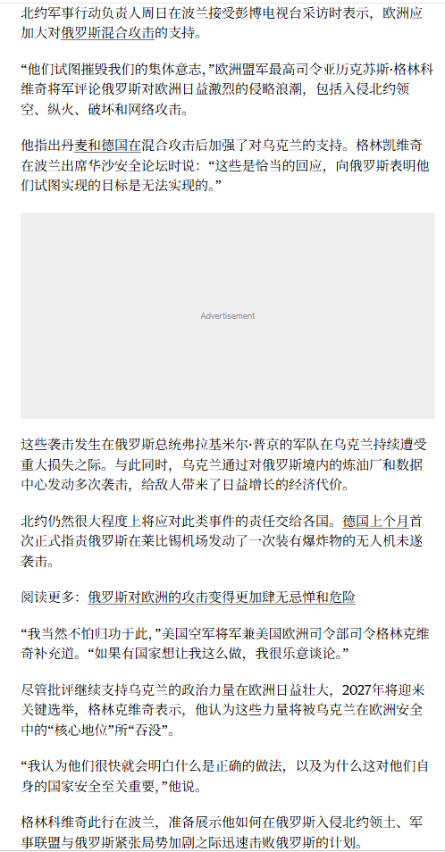
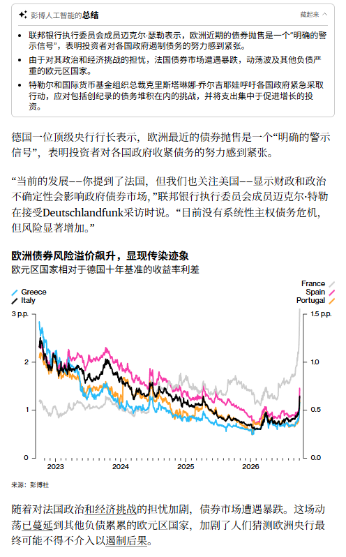
一句话核心
三条新闻拼在一起：俄罗斯伤亡创纪录但战争仍在持续，特朗普宣布"能源停火"但细节不明，欧洲主权债利差突然飙升、德国央行警告债务危机风险。
背景与关键数据
- 伤亡数字：北约高级军官称俄罗斯上月伤亡超 5 万、死亡 2.8 万，乌克兰同期伤亡约 5000。乌克兰总统办公室副主任帕利萨 7 月曾说战场上有 4.3 万俄军死亡。俄罗斯国防开支今年预计接近 17 万亿卢布（约 1900 亿美元），比原计划高 40%。
- 能源停火：双方不打击对方能源设施（炼油厂、电网）。上个月也曾宣布过类似声明，但战争仍在继续。乌克兰最近的深度空袭摧毁了俄罗斯炼油厂和数据中心，地面攻势收复超 125 平方公里。
- 混合攻击：俄罗斯对欧洲的入侵北约领空、纵火、破坏和网络攻击。北约欧洲盟军最高司令格林科维奇在波兰说欧洲应加大对俄混合攻击的支持，德国上月首次正式指责俄罗斯在莱比锡机场发动了一次带爆炸物的无人机未遂袭击。2027 年欧洲有关键选举，批评支持乌克兰的政治力量在壮大。
- 欧洲债市：联邦银行（德国央行）执行委员会成员迈克尔·特勒说近期债券抛售是"明确的警示信号"，投资者对各国政府削减债务的努力感到紧张；"目前没有系统性主权债务危机，但风险显著增加"。特朗普和 IMF 总裁格奥尔基耶娃呼吁各国紧急行动，削减债务、把支出集中在促进增长的投资上。
图片解读
- 图 1：彭博关于俄军伤亡的报道。三个要点加正文，中间有广告位。关键句：俄罗斯在"杀伤区"（充满武装无人机、地雷、炮火的区域）持续进攻；德国联邦情报局局长耶格表示普京的战争努力"制造了一种动态"，使他难以在不付出政治代价的情况下结束入侵。
- 图 2：北约军事行动负责人格林科维奇在波兰接受彭博电视采访的报道。引用："他们试图摧毁我们的集体意志"。他此行准备展示如何在俄罗斯入侵北约领土时迅速击败俄罗斯。
- 图 3：欧洲债券风险溢价图。纵轴左侧 0–3 个百分点（希腊蓝、意大利黑），右侧 0–1.5 个百分点（法国灰、西班牙粉、葡萄牙橙），横轴 2023–2026 年。各国相对德国 10 年期国债的收益率利差从 2023 年初的约 2 个百分点一路收窄到 2026 年的 0.6–0.8 个百分点，然后在最右端（2026 年四季度）几乎垂直向上跳升，法国跳到约 1.4 个百分点（右轴），意大利、希腊跳到约 1.2–1.3 个百分点（左轴）。标题"欧洲债券风险溢价飙升，显现传染迹象"。
为什么重要 / 对市场和经济的含义
- 战争本身的市场影响已经钝化，但它的两个副产品正在发酵：一是欧洲国防开支被迫上升、财政压力加大；二是能源设施被打击带来的油价风险（见帖 14）。
- 利差图是今天最该记住的一张图。利差是市场给"违约风险"的定价，三年收窄后突然翻转，起点是法国的政治和财政僵局，然后传染到意大利、希腊、西班牙。2010–2012 年欧债危机就是这个顺序。
- 这张图直接解释了帖 9 的"全球加息押注回落"：债市动荡让市场觉得央行不敢再加息，甚至可能被迫介入购债。
延伸知识
- 主权利差（sovereign spread）：某国国债收益率减去德国国债收益率。德国是欧元区信用基准，利差越大，市场越不信任该国还债能力。2012 年意大利利差曾超过 5 个百分点，希腊超过 30 个百分点。
- 欧央行的 TPI（传导保护工具）：2022 年设立，允许欧央行在利差无序扩大时买入特定国家国债。图中说"人们猜测欧洲央行最终可能不得不介入"，指的就是这个工具是否启动。
帖 9 · 彭博：美联储 10 月按兵不动，全球加息押注从 717 降到 539 个基点
时间：2026-10-11 13:51（美西）｜标签：#金融#
帖子原文
bloomberg： 交易员预计美联储将在10月下一次会议上保持不变。他们继续预计12月将上涨25个百分点，随后到2027年底再增加两次。交易员目前预计八个经济体将共加息539个基点，较9月份的717个基点有所下降，当时预期为自2022年以来最高。澳大利亚出现了最大的回调，其次是欧元区，因法国财政前景担忧，然后是韩国和加拿大。
（注：原文"上涨25个百分点"应为 25 个基点，即 0.25%。）
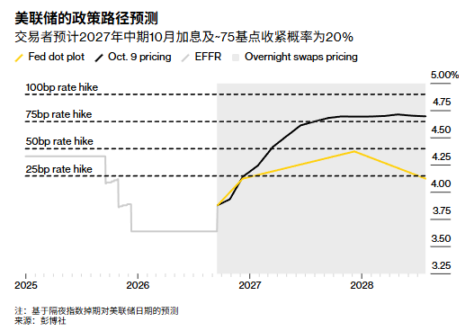
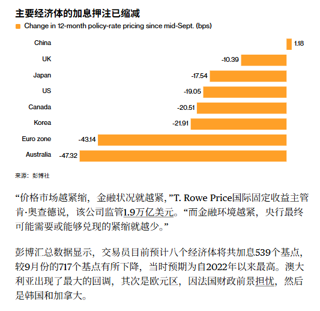
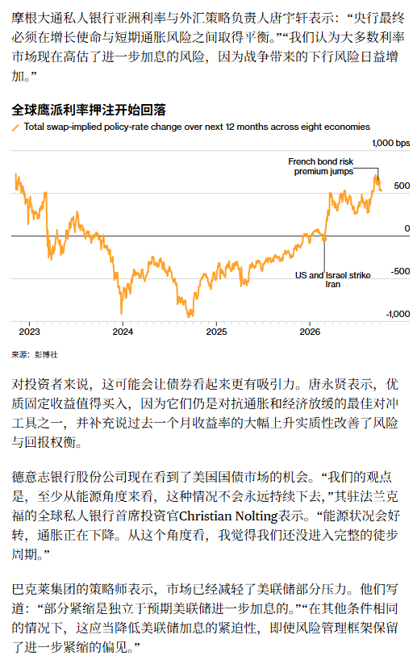
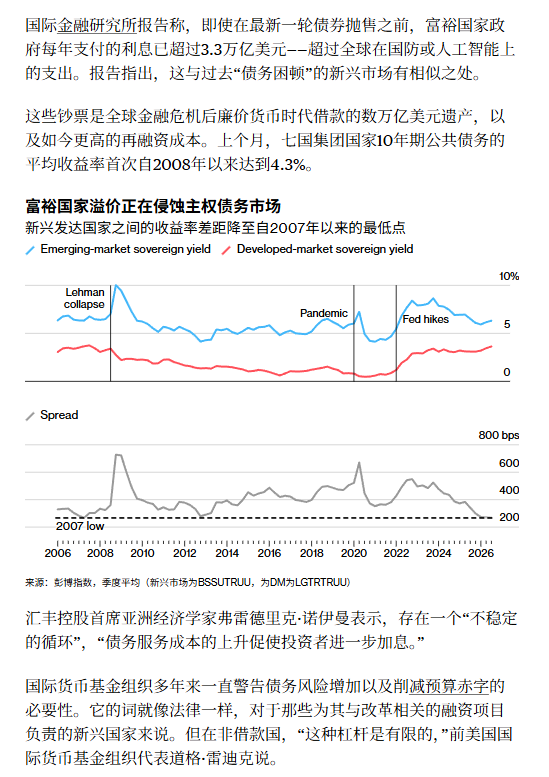
一句话核心
市场仍在定价全球加息周期（美联储 12 月加 25 个基点、八大经济体共 539 个基点），但欧洲债市动荡让加息押注在一个月内回落了近 180 个基点；同时富国的利息负担已超过国防和 AI 支出。
背景与关键数据
- 2026 年的利率背景：今年 3 月美国和以色列打击伊朗后油价飙升（见帖 14），通胀反弹，全球央行从降息转向加息。这与 2024–2025 年的降息周期正好相反。
- 美联储路径（图 1）：联邦基金有效利率（EFFR）目前约 3.75–4.0%。10 月 9 日的隔夜互换定价显示：10 月不动，12 月加 25 个基点，到 2027 年底再加两次，2027–2028 年利率峰值约 4.6%（累计约 75 个基点）。美联储点阵图（黄）峰值约 4.3%，比市场低。标题注明 10 月加息概率约 20%。
- 八大经济体加息押注：美国、欧元区、英国、日本、加拿大、澳大利亚、韩国、中国。9 月时市场定价未来 12 个月合计加息 717 个基点，是 2022 年以来最高；现在降到 539 个基点。
- 各国回落幅度（图 2，自 9 月中以来 12 个月政策利率定价变化）：澳大利亚 -47 个基点、欧元区 -43、韩国 -22、加拿大 -21、美国 -19、日本 -18、英国 -10、中国 +1。
- 富国利息负担（图 4）：国际金融协会（IIF）报告，富裕国家政府每年利息支出超 3.3 万亿美元，超过全球国防或 AI 支出；七国集团 10 年期国债平均收益率上月达到 4.3%，2008 年以来首次。新兴市场与发达市场主权收益率的差距缩到约 200 个基点，2007 年以来最低。
图片解读
- 图 1：美联储政策路径预测。横轴 2025–2028，纵轴 3.25–5.0%。灰色阶梯线是实际 EFFR（2025 年从 4.3% 降到 3.6% 附近，2026 年回升到 3.9% 左右）。黑线是 10 月 9 日的市场定价，一路升到 2027 年中的约 4.6% 后走平。黄线是美联储点阵图，2027 年约 4.1%、2028 年峰值约 4.3% 再回落。虚线标出 25/50/75/100 个基点加息对应的水平（约 4.1/4.35/4.6/4.85%）。市场比美联储自己更鹰派。
- 图 2：横向条形图，各经济体加息押注的缩减幅度，澳大利亚和欧元区缩得最多。下面引用 T. Rowe Price 的 Ken Orchard："价格市场越紧缩，金融状况就越紧，央行最终需要兑现的紧缩就越少"。
- 图 3：八大经济体未来 12 个月互换隐含政策利率变化总和，2023–2026。2023 年初约 +600 个基点，2024 年中跌到约 -1000（全面降息预期），2026 年初"美以打击伊朗"时在 0 附近，之后飙升到约 +700（标注"法国债券风险溢价跳升"），现在回落到约 +540。下方引用摩根大通私人银行唐宇轩："大多数利率市场高估了进一步加息的风险，因为战争带来的下行风险日益增加"；德意志银行看到美债机会，"能源状况会好转，通胀正在下降"；巴克莱说"部分紧缩是独立于预期美联储进一步加息的"。
- 图 4：上图是新兴市场（蓝）与发达市场（红）主权收益率，2006–2026，标注雷曼倒闭、疫情、美联储加息；新兴约 5–6%，发达约 3.5–4%。下图是两者利差，从 2008 年峰值约 700 个基点降到现在约 200，贴着"2007 年低点"的虚线。汇丰的诺伊曼说存在"不稳定的循环"：债务服务成本上升促使投资者进一步加息（要求更高收益率）。
为什么重要 / 对市场和经济的含义
- 全球利率的方向仍是"高位更高"，但市场开始怀疑央行能不能顶住财政压力把加息兑现。欧洲债市动荡就是这个怀疑的起点。
- "富国溢价正在侵蚀主权债务市场"是图 4 的标题，意思是发达国家的国债正在失去"无风险"的光环，和新兴市场的差距缩到 2007 年以来最小。这是本轮周期最大的结构性变化之一。
- 对资产：如果加息押注继续回落，长端国债和成长股受益；如果央行被迫在通胀未降时停手，黄金和实物资产受益。德银、摩根大通的观点都偏向前者。
延伸知识
- 隔夜指数互换（OIS）定价：交易员用互换合约押注未来某次会议的利率，从合约价格可以反推市场认为加息的概率。图 1 的黑线就是这么算出来的。
- 财政主导（fiscal dominance）：当政府债务太高、利息太重，央行加息会让政府利息负担不可持续，于是央行被迫迁就财政。IIF 的 3.3 万亿美元利息和 G7 4.3% 收益率，正是市场开始讨论财政主导的原因。
帖 10 · 彭博：泰国为公务员推出提前退休计划
时间：2026-10-11 13:53（美西）｜标签：#其他国家经济#
帖子原文
bloomberg： 泰国计划为公务员推出提前退休计划，旨在每年削减约5%的国家劳动力以减少政府开支
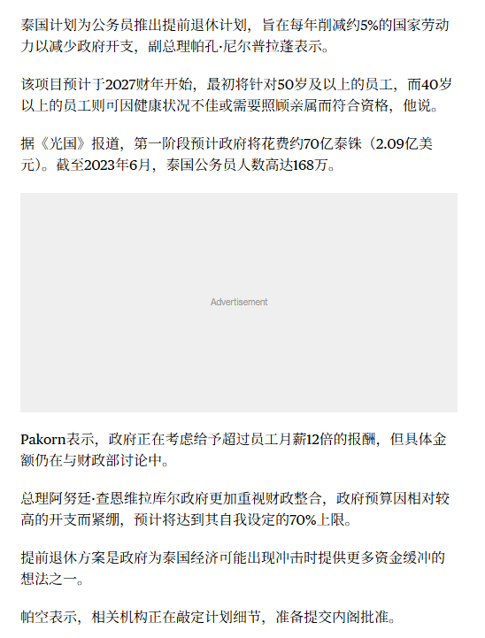
一句话核心
泰国政府要用"买断式"提前退休每年裁减 5% 公务员，是财政整顿的一部分，因为政府债务已逼近自设的 70% 上限。
背景与关键数据
- 计划细节（图中）：2027 财年开始，最初针对 50 岁以上员工，40 岁以上健康不佳或需照顾亲属者也可申请；第一阶段预计花费约 70 亿泰铢（2.09 亿美元）；考虑给予超过 12 倍月薪的补偿，具体金额仍在与财政部讨论。截至 2023 年 6 月泰国公务员人数 168 万。
- 财政背景：总理阿努廷政府更重视财政整顿，政府预算因较高开支而紧绷，公共债务预计将达到自我设定的 GDP 70% 上限。提前退休是"为泰国经济可能出现的冲击提供更多资金缓冲"的办法之一。副总理帕空·尼尔普拉蓬负责推动。
图片解读
彭博报道的中文版全文，六段文字加一个广告位。要点是时间（2027 财年）、对象（50 岁以上）、成本（70 亿泰铢）、补偿（12 倍月薪以上）、动机（债务接近 70% 上限）。
为什么重要 / 对市场和经济的含义
- Jason 把这条放在美联储和欧洲债市之后，意图是展示同一个主题在新兴市场的版本：钱不够了，开始裁政府开支。
- 公务员占泰国劳动力约 4%，是政治上最难碰的群体之一。能动这块，说明财政压力确实到了。
- 对投资者的提示：全球财政整顿是 2026 年的共同主题，从法国到泰国。财政收缩意味着经济增长的"政府引擎"在减速。
延伸知识
- 债务上限的自我设定：泰国的 70% 是国内法定的公共债务/GDP 上限（2021 年从 60% 上调），不是硬约束但有政治成本。欧盟的 60% 和 3% 赤字标准是类似的"自我约束"。
- 提前退休 vs 冻结招聘：冻结招聘是慢变量（自然减员），提前退休是快变量但要先花钱买断。泰国选快变量，说明它要的是明年就能看见的开支下降。
帖 11 · 中金：各经济体一般政府赤字占 GDP 比重
时间：2026-10-11 14:03（美西）｜标签：#TAX#
帖子原文
中金： 各经济体一般政府赤字占GDP比重
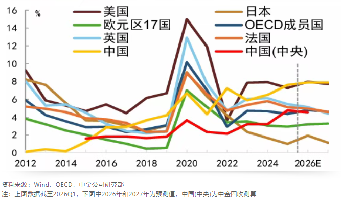
一句话核心
一张图说明：中国的广义政府赤字率已经升到约 8%，与美国并列全球主要经济体最高，而日本、欧元区反而在收缩。
背景与关键数据
- 一般政府赤字（general government deficit）：IMF/OECD 口径，把中央和地方、预算内和预算外（如中国的政府性基金）全部合并计算。比中国官方公布的"3% 赤字率"口径宽得多。
- 图中各线（2012–2027E，纵轴 0–16%）：
- 美国（深红）：2012 年约 9%，2015–2016 年降到约 4.5%，2020 年疫情飙到 15%，2021 年约 12%，2022 年约 4%，2023–2025 年回到 7.5–8%，2026E–2027E 约 8%。
- 中国（黄）：2012–2014 年接近 0，2016–2019 年升到 3–4%，2020 年 7%，2021 年 4%，2022 年约 7.5%，2023 年约 5.5–6%，2024 年约 7%，2025 年约 7.5%，2026E–2027E 约 8%。
- 中国（中央）（红，2015 年起）：1.5% → 2019 年 2% → 2020 年 3.5% → 2021–2022 年 2.3% → 2023 年 2.8% → 2024 年 3% → 2025 年 4% → 2026E–2027E 约 4.5–4.7%（中金固收测算）。
- 日本（棕）：2012 年 8% 一路降到 2019 年约 2.5%，2020 年 9%，之后逐年下降到 2025 年 1.5%、2027E 约 1%。
- 欧元区 17 国（绿）：2012 年 4%，2018–2019 年约 0.5%，2020 年 7%，2022 年后稳定在约 3–3.5%。
- 英国（浅蓝）：2020 年 13%，之后降到 2025 年约 5%、2027E 约 4.3%。
- 法国（橙）：2020 年 9%，2023–2025 年 5.5–5.8%，2027E 约 4.7%。
- OECD 成员国（深蓝）：2020 年 10%，2023 年后约 4.5–4.7%。
- 数据截至 2026 年一季度，2026–2027 年为预测值，来源 Wind、OECD、中金。
图片解读
多线折线图。最醒目的特征：黄线（中国）从左下角的 0 附近一路爬到右上角的 8%，是 15 年来唯一持续上升的主要经济体；美国红线在高位震荡；日本棕线从高位持续下降；其余国家在 2020 年脉冲后回到 3–5% 区间。红线（中国中央）从 2024 年起陡升，说明中央在接过地方的担子。
为什么重要 / 对市场和经济的含义
- 这张图纠正一个常见误解："中国财政很保守、有大量空间"。按国际可比口径，中国广义赤字率已经和美国一样高。帖 2 野村讲的"财政收缩"指的是支出增速，和这里的"赤字率高"并不矛盾：赤字高主要是因为收入（尤其土地收入）掉得快，不是因为支出猛。
- 中央赤字率从 2% 升到 4.5% 是积极信号（中央借钱比地方便宜、也更可持续），但总量 8% 意味着继续加码的空间在变小。
- 和帖 9、帖 10 放在一起：全球财政都在紧绷，中国不例外。
延伸知识
- 官方赤字率 vs 广义赤字率：中国官方 2026 年赤字率目标 4%（一般公共预算口径），加上专项债、特别国债、政府性基金缺口，广义口径到 8% 左右。看中国财政要看广义。
- 日本为什么在收缩：名义 GDP 因通胀回升而扩大、税收增长快，加上日本央行加息后财政被迫控制利息负担。日本是"通胀帮财政减负"的典型案例。
帖 12 · 长江：全球储蓄相对投资的改善，为利率下行提供资金基础
时间：2026-10-11 14:05（美西）｜标签：#金融#
帖子原文
长江： **全球储蓄相对投资的改善，为全球利率下行提供了资金基础。**20世纪90年代以来，全球储蓄率总体上升并逐步追赶投资率，储蓄—投资缺口由此前明显负值收窄至零附近，大部分阶段转为储蓄相对过剩。与此同时，中国、日本、韩国等生产型经济体长期保持贸易顺差，本国储蓄超过国内投资的部分通过经常账户向海外输出，增加全球可贷资金供给。近年来中日韩贸易顺差均有所回升，全球储蓄资金跨境配置仍对利率中枢形成一定下行力量。
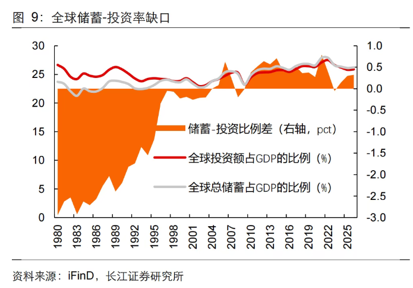
一句话核心
从长周期看，全球储蓄已经超过投资，"钱太多、项目太少"是利率中枢下行的根本原因，而中日韩的贸易顺差正是这些多余储蓄的出口。
背景与关键数据
- 储蓄—投资缺口：一国（或全球）的储蓄减去投资。储蓄多于投资，多余的钱要找去处，推低利率；反之推高。
- 图中数据（1980–2025）：全球投资/GDP（红线）1980 年约 26%，1990 年代降到约 23%，2010 年后回到 26–27%，2025 年约 25.5%。全球储蓄/GDP（灰线）轨迹相似但早期低于投资。两者之差（橙色面积，右轴）1980 年代初约 -3 到 -2 个百分点，1996–1998 年收窄到 0，2004 年后多数时候为正（+0.3 到 +0.7），2022 年峰值约 +0.7，2025 年约 +0.4。
- 生产型经济体：中国、日本、韩国、德国这类出口大于进口的国家，本国储蓄用不完，通过买外国债券、股票、直接投资输出到海外。
- "全球储蓄过剩"（global savings glut）：伯南克 2005 年提出，解释为什么美联储加息但美国长期利率不涨：亚洲储蓄涌入美债。
图片解读
长江证券研究所图 9。左轴 0–30% 对应红线（投资率）和灰线（储蓄率），右轴 -3 到 +1 个百分点对应橙色面积（储蓄减投资）。视觉重点是橙色面积从左侧深负值一路爬升到 1998 年前后穿越零线，之后基本在零线上方。意味着全球从"投资饥渴"转为"储蓄过剩"已经近 30 年。
为什么重要 / 对市场和经济的含义
- 这帖是对帖 9 的反向平衡。帖 9 说市场在押注加息、富国利息压顶；长江说从资金供求的底层看，利率的长期重心仍然偏低。两者不矛盾：前者是周期（通胀、财政），后者是趋势（人口老化、储蓄过剩）。
- 和帖 1 高盛的逻辑相通：中国的贸易顺差本质是储蓄过剩的输出。欧洲和美国要中国"扩内需"，就是要中国少存钱多花钱，减少输出到全球的储蓄。
- Jason 可能想表达：全球利率高企是财政和地缘的短期扰动，长期的资金面仍指向低利率。这对长久期资产（长债、成长股）是长期支撑。
延伸知识
- 长期停滞（secular stagnation）：萨默斯 2013 年的假说，认为储蓄过剩和投资不足会让自然利率长期为负，央行无论怎么降息都难以刺激经济。2026 年的加息周期是否只是这个长趋势里的一个插曲，是宏观界最大的争论之一。
- 自然利率（r*）：经济既不过热也不过冷时的真实利率。储蓄过剩压低 r*，财政赤字和 AI 投资热潮抬高 r*。图 9 的橙色面积是看 r* 的一个粗略窗口。
帖 13 · 德国人口时间线：半个世纪靠移民
时间：2026-10-11 14:12（美西）｜标签：#其他国家经济#
帖子原文
德国人口时间线： 1950年代到1960年代初，德国自然人口增长仍然很强，浅蓝柱大多在每年30万—50万人以上。与此同时，随着经济快速增长，德国开始大量招募"客籍工人（guest workers）"，也就是图里1960年代标注的 Recruitment of "guest workers"。这时人口增长是"自然增长 + 净移民"共同推动。到了1970年代，情况明显变化。自然人口增长快速下滑，并在70年代中后期转为负值，也就是：死亡人数 > 出生人数，从此以后，德国自身人口再生产能力明显减弱。浅蓝柱长期处在0以下。也就是说，德国已经持续了半个世纪左右，主要就是靠深蓝柱——净移民。1980年代末到1990年代初是第一轮非常明显的移民高峰。冷战末期和苏东剧变之后，大量东欧及前苏联地区的德裔人口迁回德国；随后南斯拉夫战争又带来大量难民，所以1990年前后净移民一度达到每年几十万人。但1990年代中后期以后，净移民又下降，德国人口增长重新接近0。之后南欧经济疲弱，大量西班牙、意大利、希腊等国劳动力流向德国，德国净移民又重新上升。2015年欧洲难民危机期间，德国净移民超过100万人级别，红线显示总人口增长也随之大幅跳升。2022年以后，大量乌克兰难民进入德国，净移民再次超过100万人，人口增长出现战后最强的一次跳升。
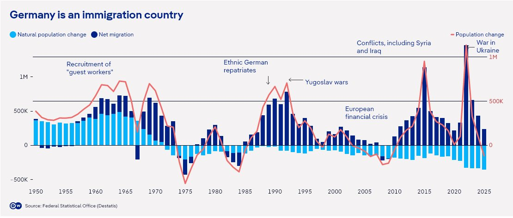
一句话核心
德国从 1970 年代中期起出生就少于死亡，之后 50 年的人口增长全靠净移民，每一次移民高峰都对应一场地缘事件。
背景与关键数据
- 自然人口变化：出生减死亡。德国 1950–1960 年代每年 +30 万到 +50 万，1970 年代中后期转负，之后一直为负，2024–2025 年约 -35 万。
- 净移民：迁入减迁出。几次高峰：1960 年代客籍工人（约 +60 万到 +70 万/年，主要来自土耳其、意大利、南斯拉夫）；1989–1992 年德裔回迁和南斯拉夫战争（约 +60 万到 +70 万，总人口增长近 +90 万）；2010 年代欧洲金融危机后南欧劳动力流入；2015 年叙利亚和伊拉克难民（净移民约 +110 万）；2022 年乌克兰战争（净移民约 +140 万，总人口增长超 +110 万，战后最高）。
- 2025 年现状：净移民回落到约 +20 万到 +40 万，自然减少约 -35 万，红线（总人口变化）回到 0 附近甚至略负。
图片解读
德国之声（DW）制图，来源德国联邦统计局。横轴 1950–2025，纵轴 -50 万到 +100 万以上。浅蓝柱是自然变化，深蓝柱是净移民，红线是总人口变化。标注了五个事件：客籍工人招募、德裔回迁、南斯拉夫战争、欧洲金融危机、叙利亚伊拉克冲突、乌克兰战争。浅蓝柱在 1972 年前后沉入零线以下再没浮上来；深蓝柱的三座高峰（1990、2015、2022）一座比一座高；红线在 2022 年冲到图表顶部后 2025 年几乎归零。
为什么重要 / 对市场和经济的含义
- 德国是欧洲经济的发动机，劳动力是它最大的瓶颈。没有移民，德国人口从 1972 年起就在萎缩。这是理解德国政治（移民是最大争议）和经济（养老金、劳动力短缺）的底层事实。
- 和帖 5 德银讲的"欧洲竞争力下降"呼应：劳动力不足、工资上升、能源贵，这些都在削弱德国制造业对中国的竞争力。
- 对投资者：德国 2025 年人口增长归零，意味着房地产、消费的长期需求见顶，除非移民政策再次放开。
延伸知识
- 人口红利与人口负债：劳动年龄人口占比上升叫红利（中国 1990–2010），下降叫负债（日本 1995 年后、德国 1970 年代后）。德国用移民硬撑了 50 年，日本没有这么做，两国的经济轨迹差异部分来自这个选择。
- 中国的参照：中国 2022 年起总人口负增长，且几乎没有移民来源。德国的图是"有移民可以撑多久"的参照，中国的问题是"没有移民怎么办"。
帖 14 · 高盛：上调 12 月布伦特油价预测至 90 美元
时间：2026-10-11 15:12（美西）｜标签：#金融#
帖子原文
高盛： 我们将12月26日Brunt油价的预测上调至90美元（之前为85美元），但2027年仍预测平均为80美元 我们估计波斯湾石油出口，包括估计的"暗色出口"，在过去两周已恢复至22-2300万吨/天，大致与2025年平均水平持平
（注：原文"12月26日"指 2026 年 12 月；"Brunt"即布伦特 Brent；"万吨/天"应为百万桶/天，图中单位是 mb/d。）
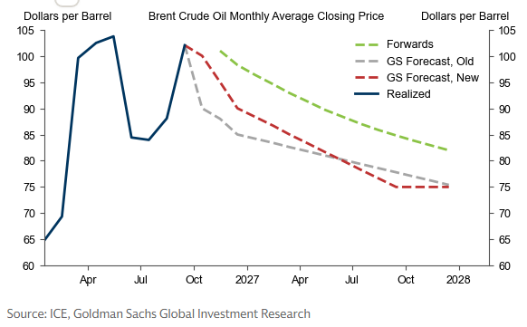
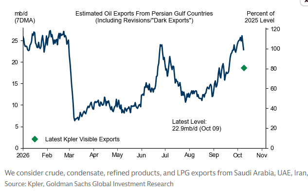
一句话核心
波斯湾石油出口已经恢复到战前水平，所以高盛虽然上调年底油价到 90 美元，但维持 2027 年 80 美元的下行路径，与市场远期曲线的 100 美元相比明显偏空。
背景与关键数据
- 2026 年油价走势（图 1）：布伦特月均价 1 月约 65 美元，3 月美以打击伊朗后冲到 4 月约 100 美元、5 月峰值约 104 美元，7–8 月回落到 84–85 美元，9–10 月再次升到约 102 美元。
- 三条预测线：远期曲线（绿虚线，市场交易出来的价格）从约 100 美元缓慢降到 2028 年约 82 美元；高盛旧预测（灰虚线）90 → 85 → 80 → 75；高盛新预测（红虚线）10 月约 100 → 2026 年 12 月 90 → 2027 年 4 月 85 → 7 月 80 → 2027 年底到 2028 年 75。高盛比远期曲线低约 10 美元。
- 波斯湾出口（图 2）：包括沙特、阿联酋、伊朗等的原油、凝析油、成品油和液化石油气出口，7 日均线。1–2 月约 25 百万桶/天，3 月初崩到约 7（霍尔木兹受阻），4–5 月约 10，6 月底回到约 24，8 月又回落到 12–13，9 月起恢复到约 26，10 月 9 日最新 22.9 百万桶/天，约等于 2025 年平均水平（右轴 100%）。Kpler 可见出口约 18.5（80%），差额是"暗色出口"（关闭应答器、转运等不可见部分）的估计。
图片解读
- 图 1：布伦特月均收盘价，纵轴 60–105 美元，横轴 2026 年 1 月到 2028 年。实线是已实现价格，三条虚线是预测。关键观察是红线（高盛新）在 2027 年中后与灰线（高盛旧）重合，说明高盛只是推迟了下跌的时间点，没有改变终点。
- 图 2：波斯湾出口量，左轴百万桶/天，右轴占 2025 年水平的百分比。3 月的断崖和之后两次反复（6 月、8 月）显示供应恢复不是一次完成的。最新读数回到 100% 线附近。
为什么重要 / 对市场和经济的含义
- 油价是今年全球通胀和加息周期的源头（帖 9）。高盛说供应已经恢复、2027 年油价回落到 80 以下，意味着通胀压力会缓解，支持帖 9 里德银"能源状况会好转、通胀正在下降"的判断。
- 但近期油价仍在 100 附近，比高盛的 12 月目标高 10 美元。市场在定价"再出一次事"的风险溢价。
- 对资产：如果高盛对，能源股和通胀交易会降温，债券受益；如果远期曲线对，加息周期会比市场现在想的更长。
延伸知识
- 暗色出口（dark exports）：受制裁国家（伊朗、俄罗斯）通过关闭船舶应答器、海上过驳、伪造文件等方式出口的石油。Kpler 等数据商只能看到"可见"部分，高盛的估计把不可见部分加回去。
- 远期曲线的贴水（backwardation）：近月价格高于远月，说明现货紧张、市场认为未来会缓解。图 1 的绿线从 100 降到 82 就是典型贴水结构，这种结构下做多原油要承担"展期损耗"。
帖 15 · 华源：A 股的叙事经济学
时间：2026-10-11 16:07（美西）｜标签：#A股#｜附件：987357724-叙事经济学-邹佩轩.pdf（10.7 MB，报告里只能看到帖子正文和 6 张截图）
帖子原文
华源： A股的叙事经济学。PE的底层逻辑是空间叙事，而不是增长速度。研究一家成长型企业时，作者认为最重要的问题不是明年增长20%还是30%，而是：这家公司未来的利润天花板究竟是今天的2倍、5倍，还是10倍？ 估值有两个方向的弹性。第一是利润空间扩大。市场原来认为公司最多能赚10亿元，现在认为未来可以赚50亿元，即使当期利润没有变化，估值也可能大幅上升。第二是折现率下降。即使利润预期没有变化，只要市场要求的风险回报下降，估值也可能显著提高。 超额收益来自叙事变化，而不是叙事兑现。股票收益=必要收益叙事变化产生的超额收益如果市场突然发现：原本预计只能占据20%的市场，现在可能占据80%；原本认为技术壁垒很低，现在发现竞争对手难以复制；原本认为企业只能在国内发展，现在可能进入全球市场；企业的未来现金流预期便会发生重新定价。作者认为，超额收益往往就在这个重新定价的过程中集中实现。这也解释了为什么有些股票业绩连续增长，股价却长期不涨；另一些股票尚未盈利，股价却提前暴涨。
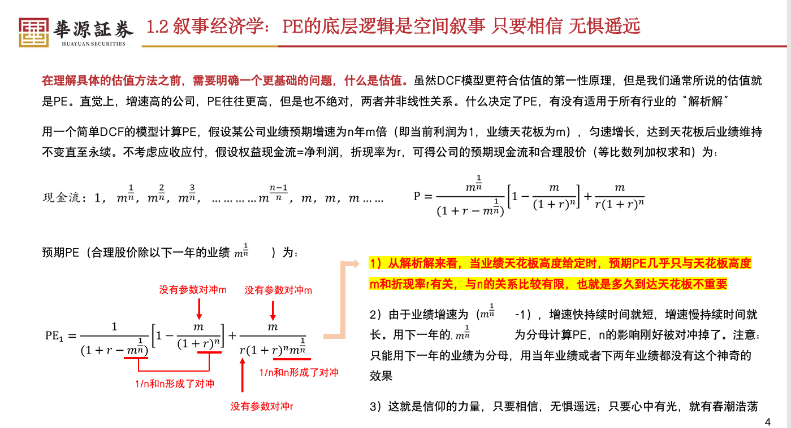
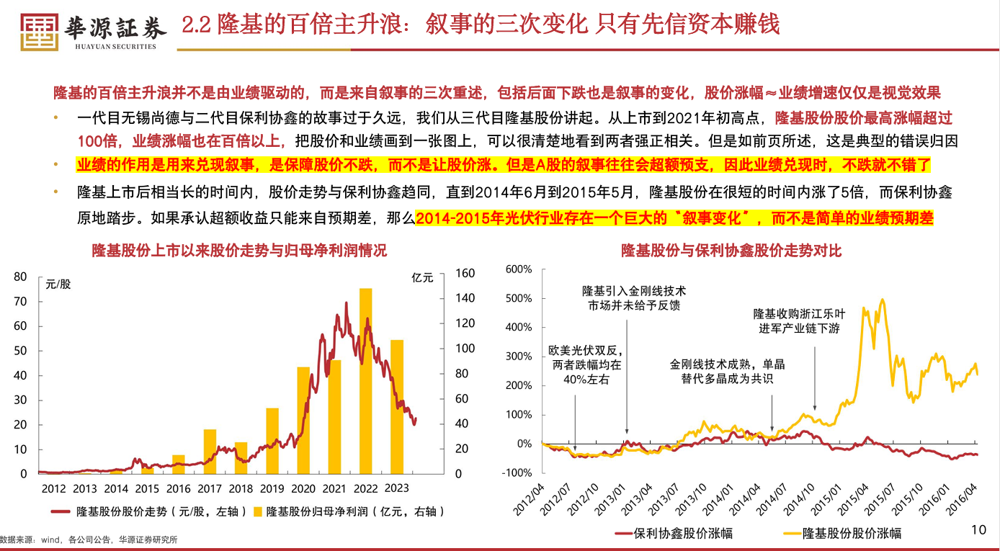
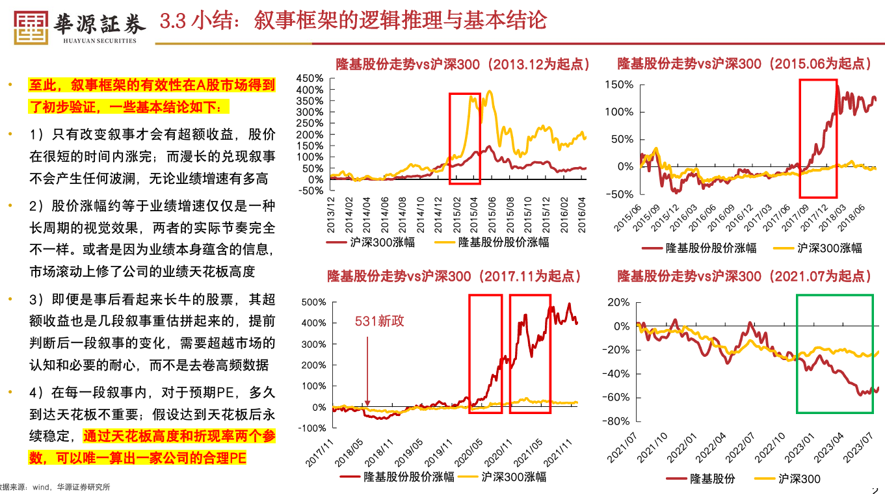
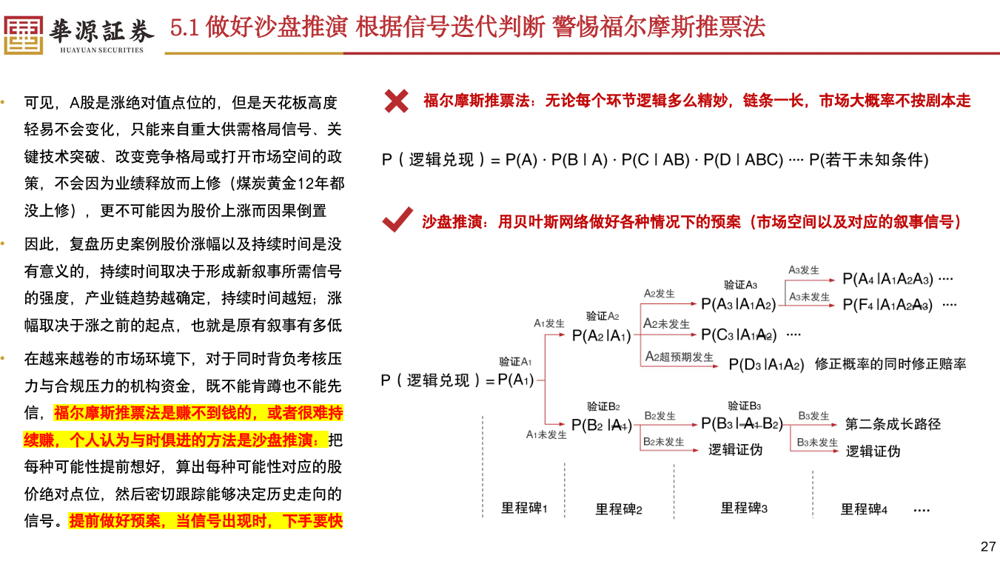
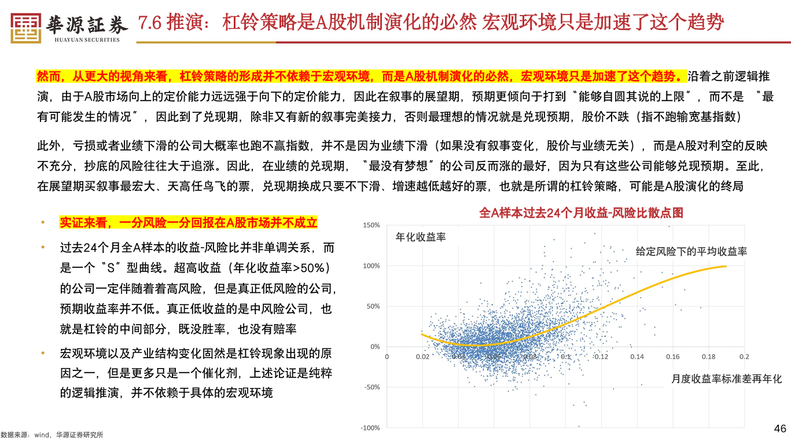
一句话核心
华源证券邹佩轩的框架：A 股的估值（PE）由"利润天花板有多高"和"折现率"两个参数决定，与"多久到达天花板"几乎无关；超额收益来自叙事的改变，而不是叙事的兑现。
背景与关键数据
- PE（市盈率）：股价除以每股利润。通常理解为"增长越快 PE 越高"，作者说这不准确。
- 解析解（图 2）：假设公司利润从 1 匀速增长到天花板 m，用 n 年到达，之后永续不变，折现率为 r。推导出的 PE 公式里，n 的影响被"下一年业绩"这个分母抵消掉，剩下只与 m 和 r 有关。结论：给定天花板高度，预期 PE 几乎只取决于天花板 m 和折现率 r。作者自嘲这是"信仰的力量，只要相信，无惧遥远"。
- 隆基案例（图 3）：隆基上市到 2021 年初涨幅超 100 倍，业绩也涨了百倍，看起来是业绩驱动，作者说这是错误归因。股价的三次主升浪对应三次叙事重述：2014–2015 年金刚线技术成熟、单晶替代多晶成为共识（隆基涨 5 倍，保利协鑫原地踏步）；2017–2018 年收购浙江乐叶进军下游；2020–2021 年光伏平价和碳中和。"业绩的作用是用来兑现叙事，是保障股价不跌，而不是让股价涨"。
- 四段验证（图 4）：隆基 vs 沪深 300 从 2013.12、2015.06、2017.11、2021.07 四个起点看，前三段都是叙事变化期大幅跑赢（红框），2021.07 后叙事耗尽，业绩仍增长但跑输指数（绿框，-60%）。四条结论：只有改变叙事才有超额收益；股价涨幅约等于业绩增速只是长周期视觉效果；长牛股的超额收益是几段叙事重估拼起来的；每段叙事内，多久到达天花板不重要。
- 方法论（图 5）："福尔摩斯推票法"是把一串环环相扣的逻辑乘起来，P(A)·P(B|A)·P(C|AB)…，链条一长概率趋近于零，市场大概率不按剧本走。替代方案是"沙盘推演"：用贝叶斯网络把每种可能性提前想好，算出每种情况对应的股价点位，密切跟踪关键信号，信号出现时快速下手。
- 杠铃策略的推演（图 6）：A 股向上定价能力远强于向下定价，叙事展望期股价打到"能自圆其说的上限"，兑现期最理想也只是不跌。所以展望期买叙事最宏大的票，兑现期换成"只要不下滑、增速越低越好"的票，这就是杠铃。实证：过去 24 个月全 A 样本的收益—风险关系是 S 型，不是单调的"一分风险一分回报"。超高收益（年化 >50%）必然伴随高风险，但真正低风险的公司预期收益不低；中风险公司最差，既没胜率也没赔率。
图片解读
- 图 1：报告封面"叙事经济学：寻找 A 股投资解析解"。作者邹佩轩，华源证券公用环保联席首席分析师，《穿透财报》《穿透估值》作者。
- 图 2：第 4 页，PE 的 DCF 推导。现金流序列 1, m^(1/n), m^(2/n), …, m, m, m…，合理股价 P 的公式，以及用下一年业绩为分母的 PE₁ 公式。红色箭头标注"1/n 和 n 形成了对冲""没有参数对冲 m""没有参数对冲 r"。
- 图 3：第 10 页，隆基百倍主升浪。左图隆基股价（红线，元/股，2012–2023）与归母净利润（黄柱，亿元）；右图隆基与保利协鑫股价涨幅对比（2012/04–2016/04），标注金刚线引入、技术成熟、收购乐叶等节点，隆基涨到 +500%，保利协鑫约 0。
- 图 4：第 3.3 节小结，四张隆基 vs 沪深 300 的分段对比图。
- 图 5：第 27 页，福尔摩斯推票法（打叉）vs 沙盘推演（打钩），右侧是贝叶斯网络的树状图，里程碑 1–4，每个节点"发生/未发生/超预期发生"分支。
- 图 6：第 46 页，杠铃策略推演。右侧散点图：横轴月度收益率标准差年化（0–0.2），纵轴年化收益率（-100% 到 150%），几千个蓝点，黄色拟合线呈 S 型。
为什么重要 / 对市场和经济的含义
- 这是今天最"学得到东西"的一帖。它解释了 A 股的一个反常现象：业绩连续增长的公司股价不涨，没盈利的公司股价暴涨。答案是市场在给"天花板"定价，不是给"增速"定价。
- 对实战的启示：找"叙事即将改变"的信号（技术突破、政策、竞争格局），而不是追"业绩即将兑现"的票；兑现期要换仓；中等风险的票是最差选择。
- 和帖 4（希瓦周报）对照：梁宏说 A 股科技"当初有泡沫、现在便宜了"，用华源的框架看，便宜不等于会涨，没有新叙事的便宜股只能靠贝塔。
延伸知识
- 叙事经济学（Narrative Economics）：诺奖得主席勒 2019 年的书，讲流行故事如何像病毒一样传播并驱动经济行为。华源的报告是这个思想在 A 股估值上的应用。
- 贝叶斯更新：先有一个概率判断，新证据出现后按规则修正。"沙盘推演"就是提前写好"如果 A 发生，概率怎么改、仓位怎么改"的剧本，避免事到临头凭感觉。
帖 16 · TKL：美国逾期贷款家庭比例升至 19.6%，2010 年以来最高
时间：2026-10-11 17:42（美西）｜标签：#其他国家经济#
帖子原文
TKL： 根据美联储数据，2025年报告逾期贷款的家庭比例激增至19.6%，为自2010年以来的最高水平。超过8.0%的家庭报告至少拖欠两个月的付款，较2022年的5.0%有所上升。
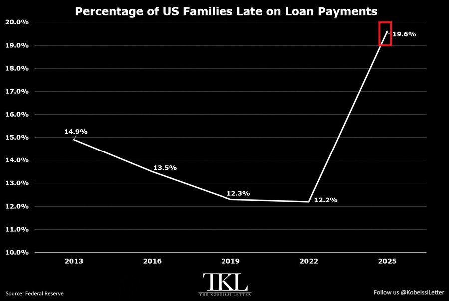
一句话核心
美国每五个家庭就有一个逾期还贷，比例三年里从 12.2% 跳到 19.6%，说明高利率已经压到普通家庭的现金流。
背景与关键数据
- 数据来源：美联储每三年一次的消费者金融调查（SCF）。"逾期"指过去一年内有任何一笔贷款付款迟交；"至少拖欠两个月"是更严重的口径，从 2022 年 5.0% 升到 2025 年 8.0% 以上。
- 时间序列（图中）：2013 年 14.9%，2016 年 13.5%，2019 年 12.3%，2022 年 12.2%，2025 年 19.6%。前三个周期逐年改善，2025 年一次性跳升 7.4 个百分点。
- 背景：2022–2023 年美联储加息到 5% 以上，2025 年虽有降息但 2026 年又转向加息（帖 9）；信用卡利率超过 20%、汽车贷款和学生贷款的还款恢复，都在挤压家庭。
图片解读
The Kobeissi Letter 制图，黑底白线。横轴五个调查年份，纵轴 10–20%。前四个点缓慢下降，第五个点垂直拉升到 19.6%，红框标出。来源注明 Federal Reserve。
为什么重要 / 对市场和经济的含义
- 美国经济的 70% 是消费，消费靠家庭现金流。逾期率突破 2010 年以来高点，是消费端最明确的压力信号，也是帖 9 里"市场高估进一步加息风险"的微观证据。
- 对资产：信用卡公司（COF、SYF）、次级车贷、消费金融的坏账会上升；对美联储，这是"再加息会伤到谁"的答案。
- Jason 把这条放在全球财政紧绷的系列末尾，意思是：政府债务压力的另一面，是家庭债务压力。
延伸知识
- SCF 与月度数据的区别：SCF 三年一次、样本约 4500 户，反映结构而不是短期波动。纽约联储的季度家庭债务报告（HHDC）才是高频追踪工具，两者结论最近是一致的：信用卡和车贷逾期率回到 2010 年代初水平。
- K 型分化在美国的体现：股市新高让富裕家庭财富创纪录，同时五分之一家庭在逾期。平均数好看、中位数难受，是 2026 年美国经济的基本面貌。
帖 17 · 一个小故事：站得低的人与站得高的人
时间：2026-10-11 18:38（美西）｜标签：无
帖子原文
中午看了会儿书，写了个小故事： 如图，有两个人。 站得低的人，要交钱给，站得高的人。 站得低的人，问：我现在生活压力不小，为什么还要定期交钱给你？ 站得高的人，答：这是你的义务。 站得低的人，问：那我交上去的钱，你会用在哪里？ 站得高的人，答：用在你的身上。 站得低的人，问：既然用在我的身上，那我自己不就可以用了吗？ 站得高的人，答：有些用途，你用不了。我要集中起来才可以。 站得低的人，问：这我明白了。那我可以监督你怎么用吗？ 站得高的人，答：当...当然可以，我会定期公布怎么用的明细。 站得低的人，问：但我看过你那个明细，我觉得不够明细。我觉得很多地方钱可能被浪费了。我的意思是，如果这些不被浪费，我不用定期给你交那么多钱。 站得高的人，答：好的，我会去调查的。你还有其他问题吗？ 站得低的人，问：有的。我需要你把所有信息透明、公开、详细。我要知道你的薪资，你的养老金，你的医疗补助，当然，你可以不用告诉我你的名字。 站得高的人，答：还有呢？ 站得低的人，问：我还有一个要求。我希望你把搁在我们中间的桌子拆掉，把你的座位降下来，我要和你平视。这桌子也花了不少钱吧。我不想每次见你的时候，都要仰着脖子。 站得高的人，坐不住了：你下一步是不是还想直接管我的钱怎么花？ 站得低的人点头：我觉得有些钱不合理。你的养老金太高了，那些人的养老金太低了。我希望两者调和。 站得高的人突然起身：时间到了，我要休息了。
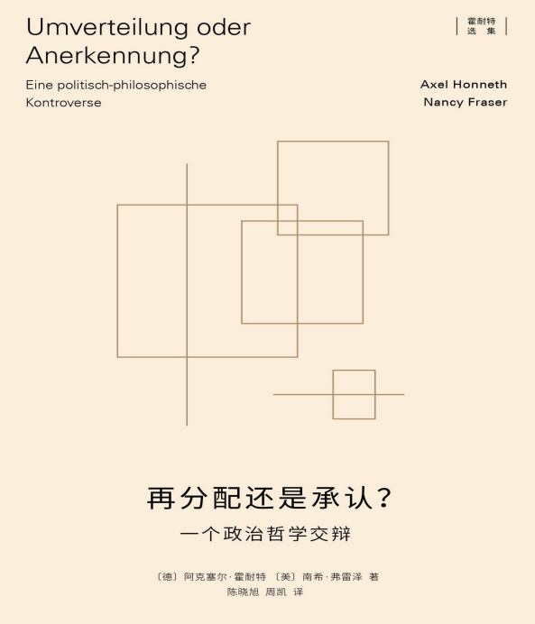
一句话核心
Jason 用一段对话寓言讲"纳税人与管理者"的关系：从"为什么交钱"问到"谁来监督"，再问到"能不能平视"和"能不能管你的养老金"，对话在触及权力结构时戛然而止。
背景与关键数据
- 故事的四层递进：
- 为什么交税：义务；用在你身上。（公共品理论：有些事只有集中起来才能做，如国防、道路。）
- 能不能监督：可以，定期公布明细。（预算公开。）
- 明细不够明细、可能浪费：我会去调查。（审计与问责。）
- 要求透明到个人（薪资、养老金、医疗）、拆掉桌子平视、调和养老金差距。（从"监督支出"升级到"质疑分配结构"，管理者离席。）
- 书的背景（图 1）：《再分配还是承认？一个政治哲学交辩》，德国阿克塞尔·霍耐特与美国南希·弗雷泽合著，陈晓旭、周凯译，上海人民出版社"霍耐特选集"。两位作者争论的核心：社会正义的问题到底是"再分配"（钱怎么分，经济不平等）还是"承认"（人与人是否被平等对待，文化和地位的不平等）。弗雷泽认为两者是并列的两个维度，霍耐特认为"承认"是更根本的，分配不公本质上是承认的失败。
- 故事与书的对应：前半段是"再分配"问题（钱交多少、花哪里、浪不浪费）；"拆掉桌子、平视"是"承认"问题（我要被当作平等的人对待）；最后的"养老金调和"把两者合在一起：分配不公背后是地位不平等。
图片解读
- 图 1：书籍封面。德文原名 Umverteilung oder Anerkennung? Eine politisch-philosophische Kontroverse，米色底，几何线条装饰。
- 图 2：AI 生成的插画。左下角一群灰色剪影，标牌"纳税人"，前景一个灰衣人举起一叠红色钞票，头顶一个问号；右侧高台上坐着西装红领带的"管理者"，笑着伸手接钱；高台上堆着文件、钱袋（¥）和一叠叠纸币，箭头指向楼房、人群、汽车和几个问号，表示钱的去向不明。构图上两人的高度差和中间的高台就是故事里要"拆掉的桌子"。
为什么重要 / 对市场和经济的含义
- 这是今天 17 帖的收束。前面讲了野村的财政收缩、中金的 8% 赤字率、IIF 的 3.3 万亿利息、泰国裁公务员、美国家庭逾期率，全是"钱不够了"。Jason 用故事把问题从"钱不够"转到"钱怎么收、怎么花、谁说了算"。
- 对读者的提示：财政问题在经济学上是收支问题，在政治学上是权力和承认的问题。当赤字率到 8%、利息超过国防开支，第二个问题会越来越难回避。管理者"时间到了，我要休息了"正是对这个难题的回避。
- Jason 没有点名任何国家，故事里用 ¥ 符号但情境是普遍的，读者可以把它套在任何一个今天提到的经济体上。
延伸知识
- 财政契约（fiscal contract）：政治学概念，纳税人同意交税，换取政府提供公共服务和问责。契约的核心不是税率高低，而是"交钱的人能不能看见、能不能说话"。1215 年《大宪章》和 1776 年"无代表不纳税"都是契约被打破后的反应。
- 养老金双轨制：故事最后一问指向的现实问题。许多国家（包括中国的机关事业单位与企业职工、欧洲的公务员与私营部门）存在不同群体养老待遇差异巨大的情况。"调和"在政治上极难，因为它要求"站得高的人"主动让渡。
今日全图索引
| 帖号 | 时间（美西） | 主题 | 标签 | 图片文件名 |
|---|---|---|---|---|
| 1 | 10-11 11:58 | 高盛：人民币升值与两个失衡，央行压低升值速度 | #金融# | post1_img1.png |
| 2 | 10-11 12:03 | 野村：5500 亿新增地方债只能部分抵消财政收缩 | #TAX# | post2_img1.png |
| 3 | 10-11 12:55 | 巴克莱：中国奢侈品复苏一再推迟，Q3 -7% | #经济数据# | post3_img1.png, post3_img2.png |
| 4 | 10-11 12:58 | 希瓦私募周报："跌了都是问题，涨了都是水平" | #股市# | post4_img1.jpg |
| 5 | 10-11 13:08 | 德银：欧中贸易关系十问十答 | #政策分析# | post5_img1.png |
| 6 | 10-11 13:10 | 兴业：REITs 列为独立基金类别，商业 REITs 四只破发 | #股市# | post6_img1.png |
| 7 | 10-11 13:35 | 彭博：欧盟限制中国混动车进口第一年 35 万辆，中欧联合声明 16 条 | #政策分析# | post7_img1.png, post7_img2.png, post7_img3.png, post7_img4.png |
| 8 | 10-11 13:46 | 彭博：俄军月伤亡超 5 万、能源停火、欧洲债市利差飙升 | #其他国家经济# | post8_img1.png, post8_img2.png, post8_img3.png |
| 9 | 10-11 13:51 | 彭博：美联储 10 月不动、12 月加 25bp，全球加息押注 717→539bp，富国利息超 3.3 万亿美元 | #金融# | post9_img1.png, post9_img2.png, post9_img3.png, post9_img4.png |
| 10 | 10-11 13:53 | 彭博：泰国公务员提前退休计划，每年裁 5% | #其他国家经济# | post10_img1.png |
| 11 | 10-11 14:03 | 中金：各经济体一般政府赤字率，中国升至约 8% | #TAX# | post11_img1.png |
| 12 | 10-11 14:05 | 长江：全球储蓄—投资缺口转正，利率中枢下行的资金基础 | #金融# | post12_img1.png |
| 13 | 10-11 14:12 | 德国人口时间线：半个世纪靠净移民 | #其他国家经济# | post13_img1.png |
| 14 | 10-11 15:12 | 高盛：12 月布伦特上调至 90 美元，波斯湾出口恢复至 22.9 mb/d | #金融# | post14_img1.png, post14_img2.png |
| 15 | 10-11 16:07 | 华源：A 股叙事经济学，PE 由天花板和折现率决定（附 PDF） | #A股# | post15_img1.png 至 post15_img6.png |
| 16 | 10-11 17:42 | TKL：美国逾期贷款家庭比例 19.6%，2010 年以来最高 | #其他国家经济# | post16_img1.png |
| 17 | 10-11 18:38 | 小故事：纳税人与管理者，配《再分配还是承认？》 | 无 | post17_img1.png, post17_img2.png |